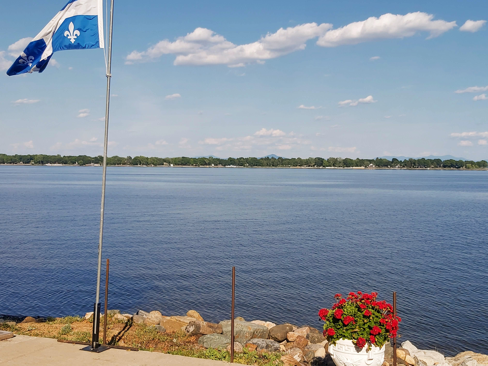
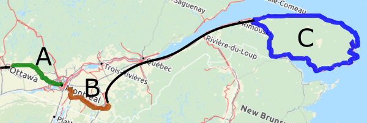
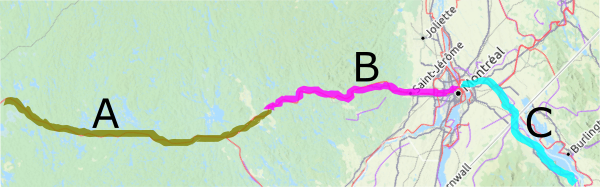
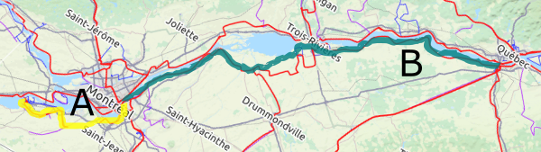
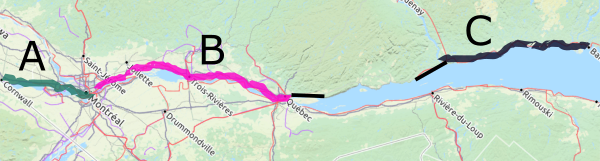
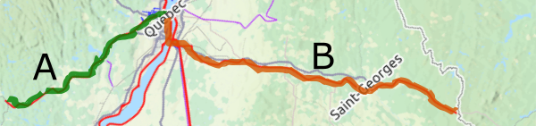
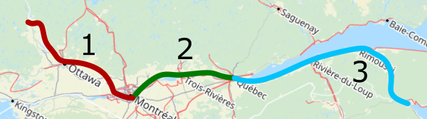

Willkommen auf der deutschen Seite auf Cyclotouristechezsoi.ca. Dies ist als Informationsseite für Radtouren in Quebec gedacht. Mit 8 Millionen Einwohnern beherbergt diese Provinz viele schöne Städte, atemberaubende Landschaften und charmante französischsprachige Menschen, und bietet hervorragende Möglichkeiten zum Radfahren in verschiedenen Landschaften.
Einleitung zu Quebec
Sprache und Kultur
Unsere Lingua franca ist französisch, unterscheidet sich jedoch in ihrer gesprochenen Form stark von der in Europa gesprochenen Sorte. In der westlichen Hälfte von Montreal sowie in vielen Gebieten an der Grenze zu Ontario, New York und Vermont wird Englisch von einem erheblichen Teil der Bevölkerung als gemeinsame Sprache verwendet. Verkehrszeichen sind normalerweise nur auf Französisch, aber Einheimische in vielen Dörfer entlang wichtiger Radwege sind es gewohnt, verlorene Touristen auf ihren Fahrrädern zu sehen, und helfen ihnen oft gerne dabei, sich zurechtzufinden, ob sie fließend sind oder nur Ja, Nein, Toaster sagen können.
Die Menschen in Québec werden Québecer, oder Québécois, in ihrer Muttersprache genannt. Die Menschen identifizieren sich entweder als solche, als Französisch-Kanadier, als Kanadier oder als eine Kombination davon. Viele Montrealer sind unterschiedlicher Herkunft und sprechen daher drei oder mehr Sprachen. Wichtig ist, dass man aufgeschlossen und bereit ist, auch nur ein paar Wörter auf Französisch zu versuchen. Die Menschen werden es zu schätzen wissen, aber seien Sie nicht beleidigt, wenn sie ins Englische wechseln. Es liegt (wahrscheinlich) nicht daran, dass Ihr Französisch schrecklich ist! Sie versuchen einfach nur, hilfreich zu sein!
Klima
Das Sommerwetter im Süden Quebecs ist warm und feucht. Ende Juli ist die heißeste Zeit des Jahres, und Hitzewellen (über 30°C) werden immer häufiger. Gewitter sind am nachmittags häufig, erreichen aber in keiner Weise die Intensität, die in den USA so häufig beobachtet wird. Tornados sind daher äußerst selten, es treten etwa fünfmal im Jahr auf, in der Regel kleinere Tornados. Nördlich und östlich von Quebec City sind die Sommertage oft kühler, und die Meeresbrise verhindert in der Regel, dass es unangenehm heiß wird.
|
Min T°C
|
Max T°C
|
Nächte < 2°C
|
Tage > 30°C
|
Regen (L/m2)
|
Regentage
|
|
|---|---|---|---|---|---|---|
| Mai | 8 | 19 | 2 | 0.4 | 81 | 14 |
| Juni | 13 | 24 | <0.1 | 2 | 87 | 13 |
| Juli | 16 | 26 | 0 | 4 | 89 | 12 |
| Aug. | 15 | 25 | 0 | 3 | 94 | 12 |
| Sept. | 10 | 21 | 0.8 | 0.7 | 83 | 11 |
|
Min T°C
|
Max T°C
|
Nächte < 2°C
|
Tage > 30°C
|
Regen (L/m2)
|
Regentage
|
|
|---|---|---|---|---|---|---|
| Mai | 5 | 17 | 6 | 0.2 | 116 | 15 |
| Juni | 11 | 22 | 0.1 | 1 | 111 | 13 |
| Juli | 14 | 25 | 0 | 3 | 121 | 14 |
| Aug. | 13 | 24 | 0 | 0.8 | 104 | 13 |
| Sept. | 8 | 18 | 0.9 | 0.1 | 116 | 13 |
|
Min T°C
|
Max T°C
|
Nächte < 2°C
|
Tage > 30°C
|
Regen (L/m2)
|
Regentage
|
|
|---|---|---|---|---|---|---|
| Mai | 8 | 19 | 3 | 0.7 | 80 | 13 |
| Juni | 13 | 24 | 0 | 3 | 93 | 13 |
| Juli | 16 | 27 | 0 | 5 | 92 | 12 |
| Aug. | 14 | 25 | 0 | 4 | 86 | 11 |
| Sept. | 10 | 20 | 1 | 0.9 | 90 | 12 |
|
Min T°C
|
Max T°C
|
Nächte < 2°C
|
Tage > 30°C
|
Regen (L/m2)
|
Regentage
|
|
|---|---|---|---|---|---|---|
| Mai | 5 | 15 | 7 | 0.2 | 84 | 14 |
| Juni | 10 | 21 | <0.1 | 0.5 | 85 | 15 |
| Juli | 13 | 23 | 0 | 1 | 91 | 15 |
| Aug. | 13 | 22 | 0 | 0.4 | 86 | 14 |
| Sept. | 9 | 17 | 0.9 | <0.1 | 88 | 14 |
|
Min T°C
|
Max T°C
|
Nächte < 2°C
|
Tage > 30°C
|
Regen (L/m2)
|
Regentage
|
|
|---|---|---|---|---|---|---|
| Mai | 1 | 14 | 18 | <0.1 | 84 | 14 |
| Juni | 6 | 20 | 5 | 0.7 | 80 | 13 |
| Juli | 10 | 23 | <0.1 | 2 | 100 | 15 |
| Aug. | 10 | 23 | 0.6 | 1 | 94 | 13 |
| Sept. | 5 | 18 | 8 | 0.2 | 82 | 12 |
|
Min T°C
|
Max T°C
|
Nächte < 2°C
|
Tage > 30°C
|
Regen (L/m2)
|
Regentage
|
|
|---|---|---|---|---|---|---|
| Mai | 3 | 16 | 12 | 0.5 | 78 | 15 |
| Juni | 9 | 22 | 1 | 2 | 88 | 15 |
| Juli | 12 | 24 | 0 | 3 | 112 | 17 |
| Aug. | 11 | 23 | 0.1 | 2 | 91 | 16 |
| Sept. | 7 | 18 | 5 | 0.3 | 103 | 16 |
Die Sommerwinde in Quebec wehen in der Regel aus dem Westen oder Südwesten und begünstigen Reisen in diese Richtung. Wenn Sie eine Schleife fahren, denken Sie daran, dass der Wind in überdachten Gebieten, d.h. innerhalb von durch Bäume geschützten Radwegen, im Allgemeinen ruhiger ist.
Tiere
Quebec ist nicht Australien! Die Fauna ist viel harmloser als in vielen anderen Teilen der Welt, und das haben wir unseren kalten Wintern zu verdanken. Zunächst einmal sind giftige Schlangen und Spinnen äußerst selten. Es gibt jedoch gewisse Gefahren, vor denen man sich in Acht nehmen muss.
Überraschen Sie sie nicht.
Wenn Sie gebissen wurden, gehen Sie in die Apotheke oder zu einem Arzt, da Sie möglicherweise vorbeugende Medikamente benötigen.
Wenn Tollwutsymptome auftreten, ist die Krankheit tödlich und es ist schon zu spät.
Obwohl sie eher lästig als gefährlich sind, machen Moskitos, Bremsen und Gnitzen Ihre Reise miserabel, wenn Sie sich nicht mit Mückenspray bewaffnen, vor allem zu Beginn des Sommers. Ab Mitte August ist es im Allgemeinen angenehmer, sich im Wald aufzuhalten, selbst in der Dämmerung. Ende Mai und Juni findet die Hauptsaison für Moskitos statt, und sollte vermieden werden, wenn man viel Stealth-Camping in den Wäldern plant.
Einreisen
Wenn Sie nach Quebec fliegen, landen Sie höchstwahrscheinlich auf dem internationalen Flughafen von Montreal. Wenn dies der Fall ist, können Sie ganz einfach mit dem Fahrrad in die Stadt fahren, indem Sie den Radwegen und Fahrradspuren in Richtung Seeufer folgen, wo die Route verte 5 und die Fahrradroute des Lachine-Kanals Sie durch die Innenstadt führen. Pendlerzüge (selten außerhalb der Hauptverkehrszeiten) fahren von Dorval Station aus, etwa 1 km vom Flughafen entfernt, bis zum Bahnhof Lucien-l'Allier im Stadtzentrum. Das Mitnehmen von Fahrrädern sind in diesen Zügen jederzeit erlaubt.
Sollte Ihr Fahrrad noch in einer Kiste liegen, können Sie auf den 747-Shuttle von STM aufspringen, der Sie mit häufigen Abfahrten in die Stadt bringt.
Weitere Möglichkeiten, nach Quebec zu fliegen, bieten die internationalen Flughäfen in Ottawa (in der Nähe von Gatineau) und Quebec City, die beide etwa 15 km von ihren jeweiligen Stadtzentren entfernt sind. Es gibt verschiedene regionale Flughäfen, die über die ganze Provinz verteilt sind, die jedoch nur von wenigen Flügen pro Tag angeflogen werden.
Fahrradurlauber können auch mit dem Zug aus Ottawa, Toronto oder den kanadischen Seeprovinzen, oder mit dem Bus anreisen. In den nachstehenden Informationen, finden Sie weitere Einzelheiten darüber, wie Sie Ihre Fahrräder für die Reise richtig packen.
Radrouten
Oh die Orte, wo man hinfahren kann! Québec ist bekannt für die großartigen Möglichkeiten, die es für Radfahrer bietet, und die Route verte, die in Wirklichkeit ein Netz von sieben Radrouten ist, die die Provinz kreuz und quer durchziehen. Etwas mehr als die Hälfte der Route verte nutzt Abschnitte auf der Straße, entweder ruhige Landstraßen oder Schultern verkehrsreicherer Routen. Der Rest ist außerhalb des Straßennetzes, normalerweise auf ehemaligen Eisenbahnstrecken.
Route 1
Dies ist die längste Strecke des Netzwerks und verbindet 10 Regionen miteinander.
Wichtigste Städte
Grenze zu Ontario Gatineau Montréal Sherbrooke Lévis Rivière-du-Loup Ste-Flavie Gaspé Ste-Flavie (Loop)
Wegbeschreibung
A. Fluss Outaouais
Fahren Sie von Montreal nach Ottawa entlang des Flusses Outaouais. Das Schöne an dieser Fahrt ist, dass sie mit ein paar Varianten und auf beiden Seiten der Provinzgrenze durchgeführt werden könnte, so dass Ihre Rundfahrt etwas... runder wird. Planen Sie eine ganze Woche für eine Rundfahrt ein. Stellen Sie sicher, dass Sie sowohl in Montreal als auch in Ottawa, die viele Sehenswürdigkeiten zu bieten haben, etwas Zeit verbringen.
B. Estrie
Eine weitere reizvolle Region zum Radfahren ist das allgemeine Gebiet zwischen Montreal und Sherbrooke, die meisten davon in den östlichen Townships. In den Dörfern sehen Sie Gebäude aus der Zeit der Loyalisten nach der US-Revolution. Auf dem Land werden Sie Ihre Augen an sanften Hügeln und abfallendem Ackerland weiden sehen. Auch hier ist ein Hin- und Rückweg möglich, da auf einem großen Teil der Strecke andere Wege zur Auswahl stehen.

C. Gaspésie-Halbinsel
Wenn Sie die Herausforderungen mögen, führt Sie die Halbinsel Gaspé durch eine ganze Region, die von Wasser umgeben ist. Die Schwierigkeit variiert stark zwischen den einzelnen Abschnitten, da der nordöstliche Teil Ihre Beine taub macht. Wenn Sie im Uhrzeigersinn fahren, profitieren Sie vom Rückenwind dort, wo Sie ihn am meisten brauchen, aber auch beim Fotografieren liegt die Landstraße zwischen Ihnen und dem Meer.

Route 2
Von der ländlichen Region Abitibi durch den borealen Dschungel führt diese Route bis in die USA.
Wichtigste Städte
Ville-Marie Rouyn-Noranda Val-d'Or Mont-Laurier Mont-Tremblant Montréal Grenze zu New York
Wegbeschreibung
A. La Vérendrye
Für eine epische Fahrt in den Norden sollten Sie versuchen, einen Bus nach Louvicourt oder Val-d'Or zu nehmen und mit dem Fahrrad nach Grand-Remous oder Mont-Laurier hinunterzufahren. Sie durchqueren das riesige Naturschutzgebiet La Vérendrye. Achten Sie darauf, sich mit Lebensmitteln einzudecken und einen Wasserfilter zu besitzen, denn während der Fahrt durch "den Park" gibt es nur wenige Möglichkeiten, sich mit Lebensmitteln zu versorgen.

B. Laurentides
Ein Klassiker für Familien und Anfänger ist der P'tit train du Nord, die mit 220 km längste Eisenbahnstrecke Quebecs, die sich von Mont-Laurier bis in die nördlichen Vororte von Montreal erstreckt. Sie fahren durch das Land der Ferienhäuser und treffen dabei auf viele Seen und Parks. In Blainville angekommen, sind Sie nur eine kurze Fahrt von Montreal entfernt.

C. Nach New York
Wenn Sie aus dem Bundesstaat New York anreisen, werden Sie höchstwahrscheinlich bei Lacolle nach Quebec einfahren und die Route verte 2 nach St-Jean-sur-Richelieu radeln. Von dort führen Sie der Chambly-Kanal und andere Radwege direkt nach Montreal.
Route 3
Ob nah oder fern, der Strom St-Laurent und diese Fahrradroute sind verwoben durch den Süden der Provinz.
Wichtigste Städte
Coteau-du-Lac Longueuil Sorel-Tracy Bécancour Lévis
Wegbeschreibung
A. Beauharnois-Kanal
Wenn Sie nur ein paar Tage Zeit haben, ist eine einfache Rundfahrt von Montreal nach Valleyfield machbar und unterhaltsam. Die Route 5 kann auf dem Rückweg abwechselnd benutzt werden. Sehen Sie sich unbedingt das größte Wasserkraftwerk im Süden Quebecs an, das sich in Beauharnois befindet, und fahren Sie entlang des 25 km langen Kanals, der dieses Kraftwerk speist.

B. Montreal nach Quebec city (Südufer)
Diese Route von Montreal nach Quebec City konkurriert mit der Route 5 über den Strom. Die hier vorgestellte Option lässt Sie einige der schönsten Landschaften des Flusstals erkunden, mit Mauern aus Mais, offenen Horizonten und gelegentlichen Ausblicken auf den Strom St-Laurent. Warum nicht von der anderen Seite zurückkommen?
Route 4
Wenn Sie diese Route durch das Zentrum von Quebec befahren, können Sie den Kanadischen Schild, das Tal von St-Laurent und die Appalachen in einer Fahrt sehen.
Wichtigste Städte
Shawinigan Trois-Rivières Bécancour Drummondville Bromont Sutton Grenze zu Vermont
Wegbeschreibung

A. Mauricie
Die Route verte 4 ist nur eine der Möglichkeiten, um von Trois-Rivières nach Shawinigan zu gelangen, was sie zu einer guten Option für eine Schleife macht. Um die Sache etwas anspruchsvoller zu machen, liegt der Mauricie-Nationalpark nur etwas weiter oben. Ansonsten sollten Sie sich die Véloboucles Mauricie ansehen, Radrouten auf der Straße, die durch die Landschaft der Region führen.
B. La Campagnarde
Wenn Sie auf der Suche nach einer einfachen Fahrt sind, versuchen Sie, auf dem Campagnarde-Eisenbahnweg von Drummondville zum Yamaska-Nationalpark zu gelangen. Dort angekommen, können Sie über Granby und Waterloo eine reine Trail-Rundfahrt machen. Dies ist eine sehr familienfreundliche Reisemöglichkeit.

C. Brome-Missisquoi
Im Nord-Süd-Korridor, der sich von Bromont bis zur Grenze zu Vermont erstreckt, gibt es eine Welt (oder eine Region) von Fahrradmöglichkeiten. Wenn Sie absichtlich von dieser Route abweichen, stoßen Sie auf ein großes Netz von überfüllten – nicht losen – Schotterstraßen, die in alle Richtungen führen, auch nach oben. Es gibt jedoch auch Steigungen. Ansonsten, wenn Sie einen Pass haben und die Grenze offen ist, brauchen Sie am Ende der Straße nicht anzuhalten!

Route 5
Von Ontario bis (fast) Labrador – diese historische Route wird Sie wieder in Quebec verliebt machen!
Wichtigste Städte
Grenze zu Ontario Montréal Trois-Rivières Québec Tadoussac Baie-Comeau
Wegbeschreibung
A. Waterfront Radroute
Wenn Sie aus Toronto oder Kingston anreisen, wird dies die Route sein, die Sie in Quebec begrüßt. Fast sofort verwandelt sich das Radfahren auf der Straße in hochmoderne Radwege, durch einen herrlichen Wald und dann entlang eines Kanals bis zu den Vororten von Montreal, wo es immer interessanter wird.
B. Der Königsweg
Wer auch nur ein wenig bequem auf der Straße fährt und Québec sehen möchte, sollte die Königsweg, oder Chemin du Roi, von Montreal nach Québec City nehmen. Alte Kirchen, historische Gebäude, das wird sich in fast jeder Kleinstadt wiederholen. Einmal am Endpunkt angekommen, könnte man sogar über die Südküste zurückkommen, ansonsten mit dem Zug oder Bus.
C. Côte-Nord
Wenn Sie auf der Suche nach einer weiter entfernten Expedition sind, radeln Sie von Tadoussac nach Baie-Comeau entlang des Nordufers der Flussmündung. Es ist damit zu rechnen, dass Sie einige Wale erspähen werden, ansonsten werden die Nadelwälder und die maritime Landschaft Sie glücklich machen, dass Sie sich für einen Fahrt an der Côte-Nord entschieden haben. Es gibt mehrere Städte, die über Fährverbindungen auf die andere Seite verfügen, sollten Sie sich für eine Schleife entscheiden.
Route 6
Fahren Sie von der Stadt Quebec aus nach Norden oder Süden in zwei gleichermaßen abgelegene Teile Quebecs.
Wichtigste Städte
Rivière-à-Pierre Québec St-Georges Grenze zu Maine
Wegbeschreibung
A. Portneuf
Wenn Sie sich in Montreal befinden und mitten im Nirgendwo hinfahren möchten, nehmen Sie die 3-mal pro Woche verkehrende Bahn nach Rivière-à-Pierre und radeln Sie hinunter nach Quebec City. Bevor Sie in die historische Altstadt Quebecs erreichen, haben Sie den ganzen Nachmittag und den nächsten Tag Zeit gehabt, durch einen "Tunnel unter den Bäumen" zu fahren, d.h. durch einen schönen Eisenbahnweg mit vielen Radrastplätzen entlang der Strecke.

B. Beauce
Die Region Beauce ist ein Flusstal, das für internationale Touristen eher ein abseits der Touristenpfade gelegenes Reiseziel ist. Ein Radweg wird derzeit Kilometer für Kilometer ausgebaut. Falls es Ihnen langweilig wird, was unwahrscheinlich ist, geht der Bellechasse-Bahnweg in nordöstlicher Richtung ab, mit der Möglichkeit, eine Schleife zu machen, die beide Routen kombiniert.

PS: Es gibt keine Route 7.
Route 8
Hier haben Sie eine dramatische Route, die von einem riesigen Binnenmeer über einen Fjord zu einem weiteren großen See führt.
Wichtigste Städte
Métabetchouan–Lac-à-la-Croix Alma Roberval Métabetchouan–Lac-à-la-Croix (Loop) Saguenay Tadoussac Rivière-du-Loup Témiscouata-sur-le-Lac Grenze zu New Brunswick
Wegbeschreibung

A. Lac-St-Jean
Eine weitere familienfreundliche Route ist die Tour zum St-Jean-See, einem der größten Seen Quebecs. Auf der Tagesordnung stehen Strände, ein Nationalpark, ein Dorf der First Nations, eine Geisterstadt, ein Zoo und jede Menge wilde Blaubeeren! Es gibt viel zu sehen und zu tun, und die Route wechselt zwischen Radwegen, ziemlich sicheren Schultern auf Landstraßen und ruhigen Nebenstraßen.
B. Fjord-du-Saguenay
Der Fjord ist eine der ultimativen Rennrad-Herausforderungen, die die Provinz zu bieten hat. Sie können auf der Route verte 8 fahren, die am Nordufer die Route 172 nutzt, oder das Südufer-Gegenstück, die Route 170, benutzt. Es gibt sogar einen Fjord-Shuttle, der die Fahrgäste auf dem Wasser hin und her bringt und Ihnen die Möglichkeit bietet, den majestätischen Fjord zu sehen und sich einen Moment lang von den Beinen brechenden Hügeln auszuruhen, die diese Straßen ertragen. Eine Schleife von Saguenay nach St-Siméon und Tadoussac ist eine unvergessliche Reise, die man mindestens einmal erleben sollte.
C. Témiscouata
Der interprovinzielle lineare Park Petit-Témis ist eine weitere "Tunnel unter den Bäumen" Bahntrasse mit einer langen Strecke entlang des Sees von Témiscouata. Dort kann man mit einer kleinen Fähre in den Nationalpark übersetzen. Zwischen Rivière-du-Loup und Témiscouata-sur-le-Lac bieten drei rustikale Campingplätze entlang des Weges eine ruhige Nachtruhe. Weiter östlich führt der Weg nach New Brunswick und endet in Edmundston. Vergessen Sie nicht, die Uhren um eine Stunde vorzustellen!

Querdurch Quebec
Auf einer Reise quer durch Kanada? Folgen Sie diesem Routenvorschlag, um das Beste aus Ihrem Aufenthalt in Quebec zu machen!
Wichtigste Städte
Pembroke, Ontario Gatineau Montréal Trois-Rivières Québec Rivière-du-Loup Rimouski Campbellton, New Brunswick
Wegbeschreibung
Teil 1: Entlang des Outaouais-Flusses
In Pembroke verlassen Sie Ontario (vorerst) und folgen Sie der Route verte 1, einem Schienenweg durch die Wälder im Westen Quebecs. In Gatineau sind Sie nur einen Katzensprung von Ottawa und all seinen Sehenswürdigkeiten entfernt. Danach radeln Sie hauptsächlich auf Straßen, bis Sie den Ferienort Oka erreichen. Von dort aus führt die landschaftlich schönste Einfahrt nach Montreal mit der Fähre nach Hudson, entlang des Flusses nach Vaudreuil und über die Route verte 5. Die Fahrt durch die Westinsel von Montreal ist mit ihren verlockenden Parks entlang des Seeufers sehr beeindruckend. Der Radweg am Lachine-Kanal führt Sie direkt ins Stadtzentrum, aber bleiben Sie auf der Route verte, wenn Sie des blauen Horizonts noch nicht müde sind.
Teil 2: Der Königsweg
Obwohl derselbe Fernradweg bis nach Quebec City zu einer langen Reihe von fabelhaften Bahntrassen wird, haben Sie bis zum Ende Ihrer Reise noch einige Provinzen vor sich. Die Route verte 5 ist daher nicht nur viel kürzer, sondern gibt Ihnen auch einen Einblick in die Geschichte Québecs. Es handelt sich um die älteste Landstraße der Provinz. Alte Kirchen, Ausblicke auf den Strom St-Laurent und historische Gebäude sind in fast jeder Stadt zu finden. Am Endpunkt angekommen, sollten Sie sich ein paar Tage Zeit nehmen, um die älteste Stadt Nordamerikas zu erkunden.
Teil 3: Die Maritimes: eine Vorgeschichte
Hier verbreitert sich der Strom, dem Sie bisher gefolgt sind, und der Geruch von Salzwasser liegt in der Luft! Entlang der Route verte 1, die Sie erneut befahren werden, bieten Ihnen zahlreiche Dörfer an der Flussmündung einen schönen Platz zum Entspannen. Zwischen Trois-Pistoles und Rimouski ist die Strecke alles andere als flach, aber Sie werden staunen, wenn Sie durch den Bic-Nationalpark fahren. Die Gaspé-Schleife beginnt in Ste-Flavie. Sie müssen ins Landesinnere abbiegen und in die Hügel hinauffahren. Auf der anderen Seite, im Tal des Matapédia-Flusses, fahren Sie auf einer Talstraße, die auf beiden Seiten von Baumwänden umgeben ist, hinunter nach Campbellton, New Brunswick.

Gesamtstrecke: zwischen 1200 und 1250 km. Höhenunterschied: ca. 7000 Meter.
Neben der Route verte gibt es in allen Regionen viele andere Wege und Möglichkeiten zum Radfahren auf den Straßen. Auf Autorouten (Autobahnen), die zwischen 1 und 99 oder 401 bis 999 nummeriert sind, ist Radfahren nicht erlaubt. Die primären Landstraßen sind von 101 bis 199 nummeriert, und die sekundären Landstraßen sind zwischen 201 und 399 nummeriert. Radfahren ist auf allen erlaubt, außer auf kurzen Strecken mit Autoroute-ähnlichen Merkmalen. Wenn Sie die Fahrradfreundlichkeitsebene auf der Legende der interaktiven Karte Quebec 511 oder der Route verte auswählen, können Sie auf ein Segment klicken und sich neben anderen relevanten Informationen das Verkehrsvolumen und die Schulterbreite anzeigen lassen.
Wenn Sie sich für Details interessieren, ist es hilfreich zu wissen, dass die geradzahligen Routen normalerweise dem Strom St-Laurent folgen, während die ungeradzahligen senkrecht verlaufen.
Verkehrsmittel
Die Fahrradmitnahme in öffentlichen Verkehrsmitteln ist nützlich, wenn man nicht unbegrenzt Zeit hat, Quebec nur mit dem Rad zu erkunden. Touristen, die aus dem Ausland anreisen und eine bestimmte Region mit dem Fahrrad erkunden wollen, müssen unter Umständen in eine Großstadt fliegen und mit dem Zug oder Bus zu ihrem Radreiseziel fahren. Glücklicherweise ist das nicht mehr so komplex.
Wenn Sie mit einem Intercity-Zug reisen (VIA Rail), können Sie Ihr Fahrrad, normalerweise unverpackt, gegen eine Gebühr von $25 mitnehmen. Charlevoix bietet einen regionalen Bahnverkehr an, bei dem Fahrräder für einen geringen Preis befördert werden. Näheres erfahren Sie unter bei der Gesellschaft, da viele Seiten von ihrer Website entfernt wurden. In der Gegend von Montreal bietet Exo einen S-Bahn an, der es erlaubt, Fahrräder an Bord aller Abfahrten zu nehmen.
Busse sind etwas komplizierter, da das Fahrrad normalerweise in eine Kiste gelegt werden muss, obwohl einige Transportunternehmen sie in riesigen Plastiktüten akzeptieren. Das entsprechende Verpackungsmaterial wird an vielen Servicestellen von Expedibus verkauft, dem Unternehmen, das den Versand von Gepäck und Fahrrädern in ganz Quebec verwaltet. Rufen Sie im Voraus an, um sicherzugehen, dass an Ihrem Abreiseort Kisten vorhanden sind! Es gibt einige regionale Transportunternehmen, die es erlauben, Fahrräder auf einem Gepäckträger an der Vorderseite eines Busses mitzunehmen.
Diese Karte (auf Französisch) gibt Ihnen alle Informationen über die Verkehrsdienste, einschließlich der Frage, wo und wie Sie ein Fahrrad mitnehmen können.
Übernachten
Hervorzuheben ist das Bienvenue cyclistes Unterkunftsnetz für Tourenradler. Das bedeutet grundlegende Werkzeuge, falls Sie Ihr eigenes vergessen haben, sowie Informationen über lokale Fahrradrouten. Besser noch, wenn Sie zelten, haben Sie immer Platz, auch wenn Sie unangekündigt auftauchen. Wenn Sie sich für eine überdachte Unterbringung entscheiden, z.B. in einer Pension oder einem Hotel, wird auch Ihr Fahrrad in einem überdachten und abgeschlossenen Bereich untergebracht sein.
Viele der lokalen Tourenradfahrer werden sich dafür entscheiden, mit Zelt und Campingausrüstung zu reisen. Zeltplätze gibt es an vielen Orten, und ein Platz für Ihr Zelt kostet zwischen $25 und $45, zu oft am oberen Ende der Skala. Einige campieren heimlich auf öffentlichem Gelände, was legal ist, oder an einem Rastplatz entlang von Radwegen, was manchmal verboten ist. In der Praxis ist es einfach, wenn man spät ankommt, früh geht, kein Feuer macht und keine Spuren hinterlässt, ohne in irgendeine Form von Ärger zu geraten. Man kann auch etwas exorbitante Campinggebühren sparen und sich eine gute Nachtruhe gönnen, ohne von hundert Wohnmobilen umgeben zu sein.
Ein Zimmer in einem Bed & Breakfast könnte im Hochsommer schwer zu bekommen sein, daher sollten leichte Touren sorgfältig im Voraus geplant werden, um böse Überraschungen zu vermeiden. Viele Quebecer benutzen auch Warmshowers, ein Netzwerk von Gastgebern, die eine Couch, ein Bett oder einen Platz für ein Zelt für Radreisende anbieten.

Über mich
Da ich als Gymnasiallehrer und angehender Programmierer in Montreal lebe, beschloss ich, etwas Codierung zu lernen und gleichzeitig mein Wissen über Fahrradtouren online weiterzugeben. Nach Fertigstellung des Projekts habe ich eine einseitige Website auf Deutsch erstellt, damit die Menschen in den deutschsprachigen Ländern dieses ausgezeichnete Radreiseziel entdecken können. Dies würde mir auch die Möglichkeit geben, weiter an meinem Deutsch zu arbeiten. Um mit mir Kontakt aufzunehmen, können Sie das Formular auf der französischsprachigen Seite verwenden.